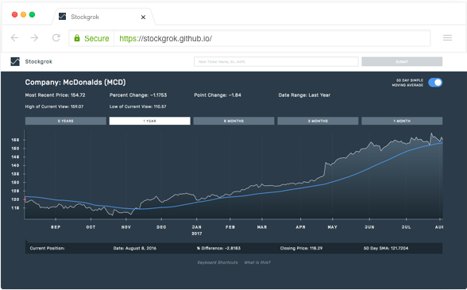

How Stockgrok Works

In technical analysis, visual patterns of market data are used to make price predictions. Until now, there has been no non-visual expert tool for technical analysis. Starting with one common indicator, the simple moving average, Stockgrok helps users of all sight levels to get information about stock prices in context of a 50 day moving average to help them assess how well a security is performing. Navigate by keyboard alone or cursor for an auditory experience of a stock and its moving average over time.
Read on for details on Stockgrok's unique approach to sonification, as well as the use of keyboard navigation and other features. Read enough and ready to try it out? Try out Stockgrok on Google Chrome.
Stockgrok uses three types of audio cues: pitch, timbre, and earcon. Pitch is used to indicate the distance of the price from the simple moving average indicator, timbre (the quality of the sound) to indicate the price line's position above or below the simple moving average indicator, and "earcons," or audio icons, are used to indicate that the price has crossed the simple moving average.
The greater the absolute difference (positive or negative) between the price and the simple moving average, the higher the pitch. The lower the difference, the lower the pitch. Compare an example of a high pitch, denoting that the price is far above the simple moving average, to a low pitch, denoting that the price is far below the simple moving average.
When the price is below the simple moving average, the quality of sound has an underwater quality.
When the price is above the simple moving average, the quality of sound is more brassy.
When the price crosses the simple moving average, you'll hear a ding, indicating the cross. If you're navigating day by day through the chart, you can use the timbre of surrounding days to judge the cross direction. When skipping from cross point to cross point, you'll hear whether the price is moving "above" or "below" the moving average through speech.
Stockgrok was built to be navigated using keyboard alone and offers a wide variety of keyboard shortcuts for easy access to features of interest. Use keyboard shortcut controls commands to move day by day (and pitch by pitch) through time in the chart, play specific values for date, % difference between price and simple moving average, closing price, and 50 day simple moving average, skip to the beginning and end, month by month, and through intersection points. You can also change the speech rate of the chart, separate from the rate of your default screen reader.
Keyboard commands work no matter where you're clicked on the screen.
| Key | Action |
|---|---|
| h | Traverse right (forward in time) |
| g | Traverse left (backwards in time) |
| , | Jump to beginning |
| . | Jump to end |
| l | Skip to previous intersection point |
| ; | Skip to next intersection point |
| o | Jump to previous month |
| p | Jump to next month |
| - | Decrease screen reader speed |
| + | Increase screen reader speed |
| Spacebar | Play date, % difference between price and simple moving average, closing price, and 50 day simple moving average at any point in the chart |
Stockgrok was built to be accessible to people across the sighted spectrum. Because the audio and visuals are linked, sighted users can follow along as visually impaired users jump around the interface.
Stockgrok pulls in data for stocks from NASDAQ and the S&P 500. Type in a ticker name to select a stock.
Change the date range to five years, one year, six months, three months, and one month by day.
Toggle the 50 Day Simple Moving Average button to only hear the stock line. The higher the pitch, the higher the price value.
Access key details about the stock overall on the top of every chart. Currently you can access most recent price, percent change from the previous day, the point change from the previous day, the selected date range, and the high and low values of the range.

Additionally, details are accessible for any given day on the chart, both visually and auditorally. Get details on the date, % difference, closing price, and 50 Day simple moving average for any given position in the chart.